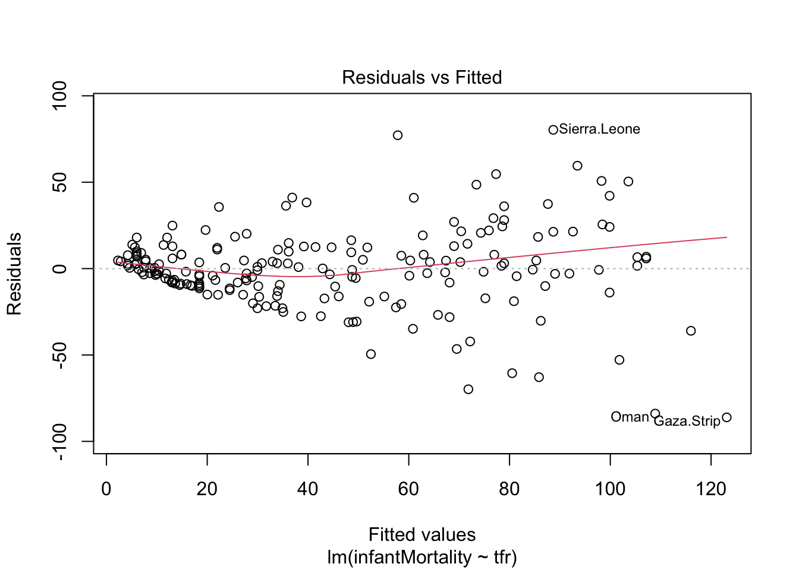

In this section, we will describe one of the approaches to dealing with nonconstant residual variance, namely robust standard errors. We will demonstrate this on the data on a model predicting infant mortality per 1000 of live births (infantMortality) by total fertility rate in a country (tfr). The data originaly came from the United Nations:
mod1 = lm(infantMortality ~ tfr, data = un)We can check the assumption of homoscedasticity, i.e. the assumption that residuals have equal variance for all values of the independet variable, using a diagnostic residual plot:
plot(mod1, which = 1)
From the plot above, we can see that the assumption of homoscedasticity has been violated, as the variance of residuals increases together with the predicted values of the dependent variables. This has two consequences: 1) The estimate of the regression coefficient will be less efficient, i.e. we will require more observations to reach the same level of precision, compared to model that fulfills the homoscedasticity assumption. 2) More concernedly, the standard errors estimates will be biased, leading to systematically under/overestimated confidence of our results.
To see why homoscedasticity may be a problem, let’s see how classic standard errors for regression coefficients are computed. Formally, the classic standard error of a regression coefficient is:
\[ SE_\beta = \frac{\sigma^2 \sum(x_i - \bar{x})^2}{[\sum(x_i - \bar{x})^2]^2} = \frac{\sigma^2}{\sum(x_i - \bar{x})^2} \]
Where \(\sigma^2\) is the variance of residuals, also known as the mean square error, and \((x-\bar{x})^2\) is total sum of squares, i.e. the sum of squared differences between the observed values of the independent variable and their mean. The important thing to notice is that the variance of residuals (\(\sigma^2\)) is a constant, a single value applied for all values of the independent variable.
The reason why we compute the variance of all residuals regardless of the values of the independent variable is because of the fact that if several groups of data have the same variance, than all the data together will have also the same variance. For example, consider the following two vectors of numbers:
vector 1 = 0.8551603, -0.1219514,0.7444561, -1.6354559, 0.1577908
vector 2 = -0.00542261, -1.71423480, 0.51218859, 0.79087341, 0.41659541
The variance of of the first vector is 0.8. The second vector has the same variance (barring some rounding errors) of 0.8. If we were to combine the two vectors together:
vector3 = 0.8551603, -0.1219514,0.7444561, -1.6354559, 0.1577908, -0.00542261, -1.71423480, 0.51218859, 0.79087341, 0.41659541
and then compute the variance of all, we would find that all the values together have the same variance as both groups separately, that is 0.8.
This provides an immensely useful computational shortcut, which allowed for computation of linear regression models long before computers become prevalent. By computing the variance of all residuals together, we will know variance of residuals for every value of the independent variable. However, as mentioned, this is only true if the variance of residuals across all values of the independent variable is equal, i.e. if the assumption of homoscedasticity is met.
What if the variance of residuals differ, based on the value of the independent variable?
Consider a different two vectors of numbers:
vector 1 = 0.05329121, 0.47450291, 0.68218495, -0.92324431, -0.28673476
vector 2 = -1.04618281, 3.36022661, -1.62755560, -0.76224781, 0.07575961
The variance of the first vector is 0.33, while the variance of the second one is 3.12. Since those two vectors have different variances, it is no surprise that the variance of all the values together is not equal to any of the two groups (in this case, it is 1.72). Consequently, if the assumption of the assumption of homoscedasticity is violated, we cannot infer variance of residuals for any level of the independent variable by simply computing the variance of all residuals.
What then? The answer is surprisingly straightforward. If knowing the total variance is not enough, we will have compute the variance of residuals for all values of the independent variable, one by one. The formula for the standard error of a regression coefficient becomes (Wooldridge, 2015, p. 245) :
\[ SE_\beta = \frac{\sum(x_i - \bar{x})^2*\sigma_i^2}{[\sum(x_i - \bar{x})^2]^2} \] Notice that the only thing that changed from the previous formula is that we no longer computes the sum of squares (\(\sum(x_i - \bar{x})^2\)) and then multiple it by the variance of residuals. Instead we compute the variance of residuals for every level of the independent variable separately (\(\sigma_i^2\)). This way of computing standard error is known as the robust standard errors, also known as heteroscedastic standard errors or sandwich errors. Note that if the variance of residuals is actually the same for all levels of independent variable, i.e. if the residuals are actually homoscedastic, both formulas give the same result.